Beceri para değildir — çevirmeyi öğren
Altı bölümdür bir şey kurduk: beni tanıdın, isteği öğrendin, akışları bağladın, atölyeyi açtın, sistemini yaptın, görünür oldun. Şimdi son ve en kısa mesafe: bütün bunların gelire dönüştüğü yer. Bu bölüm satış tekniği değil; teklifini yazmak, fiyatını koymak, ilk görüşmeyi yürütmek ve işi teslim etmek. Yedinci durak bu; ondan sonrası senin.
Bu bölümün sonunda
- Teklif, fiyat ve akışın nasıl birlikte çalıştığını bileceksin
- Kime sattığını bir cümleye indireceksin
- Saat satmayı bırakıp üç paket yazacaksın
- İlk rakamını tahminle değil bir yöntemle koyacaksın
- İlk görüşmeyi adım adım yürütebileceksin
- Sözleşme, ödeme ve teslimde kendini koruyacaksın
- Tek seferlik işi tekrar eden gelire çevirmenin yolunu göreceksin
İçindekiler
01Beceri para değildir
Altı bölüm boyunca gerçek beceriler edindin. Ama beceri ile gelir arasında bir boşluk var ve o boşluk yetenekle kapanmıyor. Çok iyi iş çıkaran, aç kalan insan var; ortalama iş çıkarıp rahat yaşayan insan var. Aradaki fark genellikle tek bir şey: biri işini bir teklife çevirmiş, diğeri çevirmemiş.
Bu bölüm o çevirme işini anlatıyor. Kimseyi ikna etme numarası öğretmiyorum; ikna etmek zaten yanlış hedef. Öğrettiğim şey, ne yaptığını karşı tarafın anlayacağı biçimde söylemek, karşılığını net bir rakamla istemek ve verdiğin sözü tutmak. Satışın zor görünmesinin sebebi çoğu zaman bu üçünün eksik olması.
Bir dürüstlük notu: bu bölüm zengin olma vaadi değil. Kursun hiçbir yerinde «şu kadar kazanırsın» demedim, burada da demeyeceğim. Söyleyebileceğim şu: teklifi net, fiyatı düşünülmüş ve teslimi güvenilir olan biri, aynı işi yapan ama bunlar dağınık olan birinden düzenli olarak daha iyi durumda oluyor.
Şimdi yap: Şu iki soruyu yaz ve boş bırak: «Ne satıyorum?» ve «Kaça?» Çoğu insan bu ikisine net cevap veremiyor. Bölümün sonunda ikisi de dolu olacak.
02Üç kelime: teklif, fiyat, akış
Her bölümde üç kelime bütün alanı açtı. Sonuncusunda da öyle. Bu üçü bir motorun üç parçası: biri eksikse motor dönmez, üçü de varsa kendi kendine döner.
Şimdi yap: Bu üçünden hangisi sende en zayıf? Dürüst ol. Çoğu okuyucu «akış» diyecek ama gerçek cevap genellikle «teklif». Zayıf olanı işaretle; bu bölümde oraya daha çok duracaksın.
03Kime satıyorsun: daralt
«Herkese hizmet veriyorum» cümlesi, kulağa geniş bir pazar gibi gelir ama pratikte hiç kimseye ulaşamamak demektir. Çünkü herkese seslenen bir cümle, hiç kimsenin kendi derdini içinde görmediği bir cümledir.
- 1Herkes«Dijital hizmetler veriyorum.» Kimse kendini görmüyor.
- 2Bir sektör«Restoranlarla çalışıyorum.» Daha iyi, hâlâ geniş.
- 3Bir sorun«Restoranların rezervasyon takibini otomatikleştiriyorum.»
- 4Bir sonuç«Rezervasyonları elle yazan restoranlara, iki haftada kendi kendine işleyen bir sistem kuruyorum.»
Korkulan şey şu: «daralırsam iş kaçırırım.» Pratikte tersi oluyor. Dar tarif, seni bir uzman yapar; uzmana daha kolay güvenilir ve daha iyi ödenir. Üstelik dar bir alanda ikinci işi yapmak birinciden üç kat hızlıdır — Laboratuvar bölümündeki «ikinci seferde üç kat hızlı» cümlesi tam olarak bu.
Şimdi yap: Dördüncü basamaktaki kalıbı kendi işine uygula: «___ yapan ___ için, ___ sürede ___ kuruyorum.» Cümle uzun olabilir; net olsun yeter.
04Teklifin anatomisi
Teklif, yaptığın işin listesi değildir. Karşı taraf senin ne yaptığını değil, kendisinin ne elde edeceğini satın alıyor. Beş parça; hepsi kısa.
İkinci parçayı özellikle vurguluyorum. Kapsamın dışında kalanı yazmazsan iş sınırsız büyür, sen yorulur ve müşteri de senden memnun kalmaz — çünkü beklediği şeyin ne olduğunu ikiniz de bilmiyordunuz. «Bu fiyata şunlar dahil değil» satırı, ilişkiyi koruyan satırdır.
Şimdi yap: Bana en son yaptığın işi anlat ve de ki: «Bunu bu beş parçayla tek sayfalık bir teklife çevir; kapsam dışını da yaz.» Çıkan metni oku — muhtemelen ilk kez teklifini görüyorsun.
05Saat satma: üç paket
Saatle fiyatlamanın iki sorunu var. Birincisi, hızlandıkça daha az kazanırsın — yani iyileşmen cezalandırılır. İkincisi, müşteri senin saatini değil sonucunu istiyor; saat konuşmak ikinizi de yanlış şeye baktırır. Çözüm: sonuca göre fiyatlanmış üç paket.
Paketleri yazarken en sık yapılan hata, büyüğe her şeyi yığmak. Doğrusu: küçük paket eksik olmalı, kusurlu değil. Yani tek başına da işe yarasın ama bir şeyin ucu açık kalsın; müşteri devamını doğal olarak istesin.
Şimdi yap: Kendi üç paketini yaz. Her birinin adı, kapsamı ve kapsam dışı üç maddeyle olsun. Rakamı sonraki başlıkta koyacağız.
06İlk rakamını bulmak
«Ne kadar isteyeyim?» sorusu tahminle cevaplandığında hep düşük çıkar. Bir yöntem kullan; beş adım ve on beş dakika.
- 1Tabanı bul: bu işi yapmak sana kaç saat sürüyor, saatine ne kadar değer biçiyorsun? Çarp. Bu senin alt sınırın, fiyatın değil.
- 2Değeri tahmin et: bu iş müşteriye ne kazandırıyor ya da ne kurtarıyor? Ayda kaç saat, kaç müşteri, ne kadar kayıp? Kaba bir yıllık rakam çıkar.
- 3İkisi arasında dur: fiyatın alt sınırının üstünde, yıllık değerin belirgin biçimde altında olmalı. Müşteri kârda olduğunu görebilmeli.
- 4Piyasayı bir kez kontrol et: aynı işi yapan üç kişiye bak. Amacın onları taklit etmek değil, bandın nerede olduğunu bilmek.
- 5Rakamı yaz ve yüksek sesle söyle. Söylerken sesin titriyorsa ya rakam yanlış ya da henüz alışmadın. Alışmak birkaç görüşme sürer.
Bir kural: ilk müşteride ucuz başla, ama bedava başlama. Bedava iş, karşı tarafta değer duygusu bırakmaz ve seni sonu gelmeyen isteklerin içine sokar. Sembolik bile olsa bir rakam, ilişkiyi iş ilişkisi yapar.
Şimdi yap: Beş adımı orta paketin için uygula. Sonra bana anlat: «şu işi şu kadara veriyorum, gerekçem bu — mantıklı mı, nerede zayıf?» Gerekçeni birlikte sınayalım.
07İlk müşteri nereden gelir
İlk müşteri neredeyse hiç soğuk bir yabancı olmuyor. Beş kanal var ve pratikte üstteki ikisi ilk işlerin çoğunu getiriyor.
- TanıdıklarınSeni zaten tanıyanlar. En hızlı, en yüksek kabul oranı.
- Eski müşteriler ve tavsiyeBir kez çalıştığın herkes. İstemezsen tavsiye gelmiyor — iste.
- İçerikVitrin bölümünün çıktısı. Yavaş başlar, sonra kendi kendine döner.
- İş ortaklığıAynı müşteriye farklı iş yapanlar. Karşılıklı yönlendirme.
- Doğrudan ulaşmaHiç tanımadığına yazmak. En düşük oran; ama kişiye özel olursa çalışır.
En üstteki kanalın en çok kaçırılan sebebi utanma. «Tanıdıklarıma iş için yazmak ayıp» diye düşünülüyor. Ayıp olan, bir işi iyi yapabilecekken kimsenin senden haberi olmaması. Cümle basit olabilir: «Şunu yapmaya başladım, senin ya da tanıdığın birinin işine yarar mı?»
Şimdi yap: Telefonundan yirmi isim çıkar: sana güvenen, işin ne olduğunu kabaca bilen kişiler. Bugün beşine yaz. Satış yapma — sadece ne yaptığını söyle ve sor.
08İlk görüşme, adım adım
Görüşme, çoğu kişinin en çok korktuğu kısım; oysa en kolay yapılandırılan kısım. Yirmi dakika, beş adım, sabit sıra. Aşağıdaki canlandırma sırayı gösteriyor — konuşmanın kimde olduğuna dikkat et.
Üçüncü adım görünenden önemli. Anladığını kendi cümlenle geri söylediğinde iki şey olur: yanlış anladıysan düzeltilir, doğru anladıysan karşındaki «bu adam beni anladı» der. Satışın büyük kısmı burada biter; geri kalanı ayrıntıdır.
Fiyatı görüşmede söyle, teklifte tekrar et. Kaçınırsan kararsız görünürsün ve ikinci bir görüşme gerekir. Rakamı söyledikten sonra sus — cevabı bekle. O sessizlik rahatsız edicidir ve tam da bu yüzden işe yarar.
Şimdi yap: Bu beş adımı bir kâğıda yaz ve görüşmede önüne koy. İlk üç görüşmede kâğıda bakmak utanılacak bir şey değil; yapılandırılmış bir konuşma, ezberlenmiş bir konuşmadan iyidir.
09Teklifi göndermek
Görüşme bittikten sonra teklif yirmi dört saat içinde gitmeli. Gecikme ilgiyi soğutur ve çoğu kayıp iş bu boşlukta kaybedilir. İçerik zaten hazır: 04'teki beş parça.
Biçim
Tek sayfa, düz metin ya da basit bir belge. Tasarım yarışması değil bu; okunması ve onaylanması kolay olsun. Karşı taraf telefonundan okuyacak.
Dil
Görüşmede duyduğun kelimeleri kullan. O «rezervasyon defteri» dediyse sen de «rezervasyon defteri» yaz; «veri giriş süreci» yazma. Kendi kelimesini gören insan anlaşıldığını hisseder.
Geçerlilik
«Bu teklif iki hafta geçerli» satırı bir baskı taktiği değil, bir dürüstlük: fiyatlar ve takvimin değişir. Aynı zamanda kararı süresiz beklemekten seni kurtarır.
Gönderdikten sonra takip: üç iş günü sonra tek bir kısa mesaj. «Teklifi gördün mü, sorun var mı?» Cevap gelmezse bir hafta sonra bir tane daha, sonra bırak. İki takip yeterli; üçüncüsü ilişkiye zarar verir.
Şimdi yap: 04'te çıkardığımız teklifi bir şablona çevir: değişkenler köşeli parantez içinde kalsın. Bir dahaki görüşmeden sonra on dakikada dolduracaksın.
10Hayır ve pazarlık
Her teklif kabul edilmez ve edilmemeli. Kabul oranın yüzde yüzse fiyatın düşük demektir. «Hayır» bir başarısızlık değil, bir bilgi — ve çoğu zaman bir «şimdi değil».
«Peki, yüzde yirmi indirim yapayım.» Aynı işi daha ucuza yapmış olursun; müşteri de ilk rakamının şişirilmiş olduğunu öğrenir. Bir daha hiçbir fiyatına inanmaz.
«Bu bütçeyle şunu çıkarırız, şu kalır.» Fiyat düşer çünkü iş düşer. Rakamının gerekçesi ayakta kalır ve müşteri neyi almadığını bilir.
Bir de «pahalı» kelimesinin çoğu zaman fiyatla ilgili olmadığını bil. «Pahalı» genellikle «değerini anlamadım» demek. O anda indirim yapmak yerine geri dön: bu iş sana ne kazandıracaktı? Altıncı başlıktaki değer hesabını birlikte yap. Yarısında rakam aynı kalır ve iş olur.
Şimdi yap: Üç paketinin her birinden çıkarılabilecek iki maddeyi şimdiden belirle. Pazarlık anında düşünmek zorunda kalmazsın; elinde hazır bir taviz listesi olur.
11Sözleşme ve ödeme
Küçük işlerde sözleşme abartı gibi görünür; ta ki bir kez başına gelene kadar. Karmaşık bir belge gerekmiyor — teklifin kendisi, üstüne dört satır eklenerek sözleşmeye dönüşebilir.
Peşinat
İşin başında bir kısmı alınır — yarısı yaygın. Bu bir güvensizlik işareti değil, standart. Peşinat vermeyen müşteri çoğu zaman ödemekte de zorlanan müşteridir; erken öğrenmek iyidir.
Revizyon sayısı
«İki tur düzeltme dahil, sonrası ayrıca ücretlendirilir.» Bu satır olmadığında iş hiç bitmez. Sınır koymak müşteriyi de rahatlatır: kaç hakkı olduğunu bilir.
Kimin neyi sağlayacağı
Metinler, görseller, hesap erişimleri kimden gelecek ve ne zaman? Projelerin çoğu senin yavaşlığından değil, beklenen malzemenin gelmemesinden gecikir. Yaz ki takvim ikinize de bağlı olsun.
Kullanım izni
Vitrin bölümündeki o tek satır: «çalışmayı tanıtımda kullanabilir miyim?» Şimdi sözleşmeye giriyor. Sonradan sormaktan kolaydır ve çoğu müşteri evet der.
Şimdi yap: Bana teklif şablonunu ver ve «bu dört maddeyi ekleyip basit bir anlaşma metnine çevir» de. Uzun hukuk dili istemiyorum; iki tarafın da anladığı sade cümleler istiyorum.
12Teslim: söz verdiğini ver
İşi almak yarısı; ikinci yarısı teslim. Ve bir ajansın uzun vadeli geliri neredeyse tamamen bu yarıdan geliyor, çünkü tavsiye de tekrar eden iş de buradan doğuyor. Üç kural yeter.
Haber ver
Haftada bir kısa durum mesajı: ne bitti, ne kaldı, senden ne bekliyorum. İki satır. Sessiz kalan bir tedarikçi, geciken bir tedarikçiden daha çok endişelendirir.
Erken ve eksik göster
Yarısı biten işi göster. Sürpriz teslimat kötü bir fikir: dört hafta çalışıp yanlış yönde gitmiş olmak, ilk haftada duyulan «ben bunu böyle düşünmemiştim»ten çok daha pahalı.
Devri kolaylaştır
Teslimde beş dakikalık bir video çek: nasıl kullanılacağını anlat. Laboratuvar bölümünde kurduğun sistemler için bu, destek mesajlarının yarısını ortadan kaldırır.
Bir de gecikme gerçeği: geciktiğinde önceden söyle. Gecikmeyi teslim gününde duyuran kişi güven kaybeder; bir hafta önce «şu sebeple üç gün kayacak» diyen kişi genellikle hiçbir şey kaybetmez. Ajan bölümündeki «sessizce kırılma» kuralı insan ilişkilerinde de aynen geçerli.
Şimdi yap: Devam eden bir işin varsa bugün iki satırlık durum mesajı at. Yoksa ilk müşterin için haftalık durum mesajı şablonunu şimdi yaz — üç madde yeter.
13Tekrar eden gelir
Tek seferlik işlerle geçinmek, her ay sıfırdan başlamak demek. Ayın ilk günü gelirin sıfırsa, o ay ne kadar iyi çalıştığın değil ne kadar iyi sattığın önemli olur. Tekrar eden gelir bu zemini değiştiriyor.
Ne satılır aylık olarak? Kurduğun şeyin devamı: akışların bakımı, içerik üretimi, raporlama, aylık iyileştirme. Kural şu — aylık paket, gerçek ve görünür bir iş içermeli. İçinde iş olmayan «destek paketi» ikinci ayda iptal edilir. Ay sonunda bir sayfa gönder: bu ay ne yaptım, ne değişti.
Şimdi yap: Büyük paketinin aylık kısmını yaz: ayda hangi üç iş yapılacak ve ay sonunda ne raporlanacak? Üç madde yeter, ama gerçek olsun.
14Kendi işin varsa
Bu bölümü buraya kadar hizmet satacakmış gibi okudun. Ama kendi işin varsa — bir dükkân, bir atölye, bir kafe — aynı kurslar aynı sonucu başka yoldan veriyor. Müşteri aramıyorsun; zaten var. Yapman gereken, aynı işten daha fazlasını çıkarmak.
Kaybettiğin ilgiyi yakala
Cevaplanmamış her mesaj kaybedilmiş bir satış. Vitrin bölümündeki DM akışı ve Ajan bölümündeki otomatik karşılama, çoğu küçük işletmede ilk ayda kendini ödüyor — yeni müşteri bulmadan, sadece geleni kaçırmayarak.
Saatini geri al
Ajan ve Atölye bölümlerindeki akışlar haftada beş saat kazandırıyorsa, o beş saati ya işi büyütmeye ya da kendine harcarsın. İkisi de gelirdir; ikincisi daha az konuşulur.
Geri dönüşü otomatikleştir
Bir kez gelen müşterinin ikinci kez gelmesi, yeni müşteri bulmaktan kat kat ucuz. CRM'in bunu biliyor: «üç ay önce gelmiş, bir daha gelmemiş» listesi bir akışla her ay çıkar ve otomatik bir hatırlatma gider.
Kurduğunu sat
Kendi işinde çalışan bir sistem kurduysan, aynı sektördeki bir başkası onu ister. Bu, ikinci bir gelir kalemi — ve satması en kolay olanı, çünkü kanıt zaten senin işin.
Şimdi yap: Bu dört maddeden hangisi sende en hızlı sonuç verir? Birini seç ve bu hafta kur. Dördünü aynı anda denemek, hiçbirini bitirmemenin en yaygın yolu.
15Kapasite: tek kişinin sınırı
İyi giderse bir problem doğar ve buna hazırlıklı olmak gerekir: işler senin saatinden fazla gelmeye başlar. Üç çıkış var; üçü de meşru ama sonuçları farklı.
Fiyatı yükselt
En basit ve en çok ertelenen çözüm. Talep saatinden fazlaysa fiyatın düşüktür. Yüzde yirmi zam yap; bir kısmı gider, kalanla aynı parayı daha az saatte kazanırsın.
Daha çok otomatikleştir
Kursun ilk altı bölümü zaten bunun için. Her yeni müşteride tekrar ettiğin adımları bir skill'e ya da akışa çevir. Üçüncü müşteride kurulum süresi yarıya iner.
Birini al
En son düşünülecek olan. İnsan almak, yönetmek demek; ve yönetmek yeni bir iş. Önce ilk ikisini sonuna kadar kullan — çoğu tek kişilik ajans, ikisiyle rahat bir gelire ulaşıyor.
Bir uyarı: kapasiten dolduğunda yeni işi geri çevirmek zor gelir ve insanlar «sığdırırım» der. Sığmıyorsa sığmıyor. Kötü teslim edilmiş bir iş, hiç alınmamış bir işten pahalıdır — hem paran hem adın gider.
Şimdi yap: Haftada kaç saat gerçekten müşteri işine ayırabiliyorsun? Yaz. Orta paketin kaç saat sürüyor? Böl. Çıkan sayı senin aylık üst sınırın — bunu bilmeden fiyat konuşulmaz.
16Ne zaman hayır dersin
Gelir kaygısı varken hayır demek zordur; ama yanlış işe evet demenin bedeli neredeyse her zaman daha yüksek. Dört işaret; biri bile varsa dur ve düşün.
Sonucu sana bağlı değil
İşin başarısı senin yapmadığın bir şeye bağlıysa — onların ekibi, onların bütçesi, onların kararı — başarısızlık yine sana yazılır. Ya sınırı yaz ya alma.
Daha başlamadan pazarlık
Fiyatı üç kez aşağı çeken müşteri, iş sırasında da her şeyi tartışacak. Ucuza aldığını düşünen insan, en çok isteyen insandır.
Aceleyle gelen
«Yarın lazım» işleri, ya birinin bıraktığı iştir ya da baştan yanlış planlanmıştır. İkisi de sana devredilen bir sorun. Acele ücreti koy ya da geç.
İçine sinmiyorsa
Gerekçesini bulamadığın bir rahatsızlık genellikle haklıdır. Küçük bir işletmede en kıymetli varlık senin dikkatin; yanlış müşteri onu üç ay yer.
Hayır demenin nazik biçimi kısa olanıdır: «Bu iş bana uygun değil, ama şunu deneyebilirsin.» Uzun açıklama tartışma davet eder. Yönlendirme yapabiliyorsan yap; reddettiğin müşteri, doğru yere yönlendirdiğinde seni yine de tavsiye eder.
Şimdi yap: Hayır cümleni şimdi yaz ve kaydet. O anda yazmaya çalışmak zordur; hazır bir cümle, zor bir anı kolaylaştırır.
17Beş yaygın hata
1 · Fiyatı söylemekten kaçınmak
«Bir hesaplayıp döneyim» demek bazen dürüsttür, çoğu zaman korkudur. Paketlerin hazırsa rakam görüşmede söylenir. Söyleyip susmak, kaçınmaktan her zaman iyidir.
2 · Kapsam dışını yazmamak
Yazılmayan her şey dahil sayılır. İş büyür, süre uzar, ikiniz de mutsuz olursunuz. «Şunlar dahil değil» satırı sözleşmenin en değerli satırıdır.
3 · Peşinatsız başlamak
İyi niyetle başlanan ödemesiz işlerin önemli bir kısmı yarıda kalıyor. Peşinat, karşı tarafın da işe bağlanmasını sağlar; senin için sigorta, onun için karar.
4 · Teslimde sessiz kalmak
İki hafta haber vermeyen biri, iyi çalışıyor olsa bile kötü çalışıyor sanılır. Haftada iki satır, işin kendisi kadar değerli.
5 · Tavsiye istememek
Memnun müşteri seni kendiliğinden anlatmaz; aklına gelmez. İş biter bitmez sor: «memnun kaldıysan, benzer bir derdi olan birini tanıyor musun?» En ucuz büyüme burada.
Şimdi yap: Bu beşini teklif şablonunun altına kontrol listesi olarak yapıştır. Her teklif göndermeden önce otuz saniyede geç.
18Herkesin sorduğu
Hiç referansım yokken nasıl iş alırım?
Referans yerine kanıt kullan. Kendi üstünde kurduğun sistem bir kanıttır: «bunu kendi işimde kurdum, şu sonucu aldım» cümlesi ilk üç müşteri için yeter. İkincisi, ilk işi tanıdığından al — orada referans yerine güven zaten var. Üç iş sonra bu soru ortadan kalkıyor.
Fiyatımı söylediğimde sesim titriyor.
Bu normal ve geçiyor. İki pratik yardım: rakamı yüksek sesle on kez söyle, bana karşı bir prova görüşmesi yap — müşteri rolünü ben oynayayım, itirazları ben çıkarayım. Üçüncü gerçek görüşmede titreme kalmıyor. Bir de şunu bil: gerekçesi olan bir rakamı söylemek, gerekçesi olmayanı söylemekten kolaydır.
Müşteri «düşüneyim» dedi ve kayboldu.
Çoğu zaman bu bir hayır ama kibar bir hayır. Yapılacak şey: teklifte geçerlilik süresi olması ve iki takip mesajı. Sonrası bırakmaktır. Bir şey daha — görüşmenin sonunda «sonraki adım» belirlenmemişse kaybolma ihtimali çok yükselir; sekizinci başlıktaki beşinci adım tam olarak bunun içindi.
Yapay zekâ kullandığımı söylemeli miyim?
Sorulursa evet, kendiliğinden gerekmez. Müşteri bir sonuç satın alıyor; hangi araçlarla çalıştığın senin yöntemin. Ama iki sınır var: sorduğunda yalan söyleme, ve teslim ettiğin işin sorumluluğu sana ait — «yapay zekâ öyle yazmış» geçerli bir mazeret değil. Vitrin bölümündeki dürüstlük sınırının aynısı.
Bu kursu bitirince ne kadar kazanırım?
Bilmiyorum ve bilen de yok — sektörüne, şehrine, ne kadar çalıştığına ve kaç kişi tanıdığına bağlı. Söyleyebileceğim şu: bu bölümdeki adımları yapan biri, ilk müşterisine genellikle haftalar içinde ulaşıyor; düzenli gelire aylar içinde. Sana rakam vaat eden herkesi şüpheyle karşıla.
Kursu bitirdim, sırada ne var?
Baştan dön. Bu cümle şaka değil: ikinci okumada bölümlerin yarısı yeni gelir, çünkü artık uygulayacak bir işin var. Bir de kurduğun her şeyin bakımı: CLAUDE.md'ni büyüt, akışlarını gözden geçir, dört sayını haftalık yaz. Zirve bir varış değil, bakımı olan bir yer.
Şimdi yap: Bir görüşme öncesi gerginsen bana yaz: «müşteri rolünü oyna, şu işi satıyorum, zor sorular sor.» Prova yapalım. Gerçek görüşmede duyacağın itirazların çoğunu önceden duymuş olursun.
19Alıştırmalar
1 · Cümle, paket, rakam
03'teki daraltma cümlesini yaz, 05'teki üç paketi çıkar, 06'daki beş adımla rakamları koy.
Amaç: «Ne satıyorum?» ve «Kaça?» sorularının ilk kez yazılı bir cevabı olması.
2 · Yirmi isim, beş mesaj
07'deki listeyi çıkar ve bu hafta beş kişiye yaz. Satma; ne yaptığını söyle ve sor.
Amaç: ilk görüşmeyi ayarlamak — bu bölümün tek gerçek eşiği.
3 · Prova ve gerçek görüşme
Benimle bir prova görüşmesi yap, sonra gerçeğini yürüt. Yirmi dört saat içinde teklifi gönder.
Amaç: beş adımlık yapıyı bir kez canlıda kullanmak ve fiyatı yüksek sesle söylemek.
4 · Aylık paketi kur
13'teki aylık kısmı yaz ve ilk müşterine teslimden sonra teklif et: «devamını aylık yürütelim mi?»
Amaç: ayın ilk günü sıfırdan başlamayan bir zemin kurmak.
Şimdi yap: Birinciyi bugün, ikinciyi bu hafta. Üçüncü, ikinci sonuç verince. Dördüncü, ilk teslimden sonra. Sıra bu; atlamak işe yaramıyor.
20Kendini sına
Önce kendin cevapla, sonra aç.
Teklif, fiyat, akış — hangisi önce?
Bu sırayla. Net teklifi ve fiyatı olmayan biri için daha çok ilgi, daha çok boşa giden görüşme demektir. Çoğu kişi yalnızca üçüncüsüyle uğraşıyor.
Neden daralmak gerekir?
Herkese seslenen cümlede kimse kendini görmez. Dar tarif seni uzman yapar; uzmana daha kolay güvenilir, daha iyi ödenir ve ikinci iş üç kat hızlı biter.
Teklifin beş parçası?
Sonuç, kapsam, süre, fiyat, sonraki adım. Tek sayfa. Kapsamın «dahil değil» kısmı en az «dahil» kadar önemli.
Neden saatle fiyatlanmaz?
Hızlandıkça daha az kazanırsın; yani iyileşmen cezalandırılır. Ayrıca müşteri saatini değil sonucunu istiyor. Çözüm: sonuca göre fiyatlanmış üç paket, ortası hedef.
İlk rakam nasıl bulunur?
Taban (saatin × süre) alt sınırdır, fiyat değil. Müşteriye yıllık değerini tahmin et; fiyat tabanın üstünde, o değerin belirgin altında olsun. Piyasayı bir kez kontrol et, rakamı yaz, yüksek sesle söyle.
İlk müşteri en çok nereden gelir?
Tanıdıklardan ve eski müşterilerden. Yukarı çıktıkça güven hazır gelir, aşağı indikçe sıfırdan kurulur. İçerik arkada birikir; doğrudan ulaşma en düşük oranlı kanaldır.
İlk görüşmenin beş adımı?
Dinle, ölç, aynala, öner, bağla. İlk yarıda müşteri konuşur, ikinci yarıda sen. Üçüncü adım — anladığını geri söylemek — satışın büyük kısmını bitirir.
«Pahalı» dendiğinde ne yapılır?
İndirim değil, kapsam. «Bu bütçeyle şunu çıkarırız» dersin; fiyat düşer çünkü iş düşer. Üstelik «pahalı» çoğu zaman «değerini anlamadım» demektir; değer hesabına geri dön.
Sözleşmenin dört satırı?
Peşinat, revizyon sayısı, kimin neyi sağlayacağı, kullanım izni. Teklifin üstüne bu dördü eklenince anlaşma olur; uzun hukuk dili gerekmez.
Kapasite dolduğunda sıra nedir?
Önce fiyatı yükselt, sonra daha çok otomatikleştir, en son birini al. İnsan almak yönetmek demek ve yönetmek yeni bir iştir. Sığmayan işi almamak, kötü teslim etmekten ucuzdur.
Bir cümlede bu bölüm
Kime ne sattığını bir cümleye indir, üç paket yaz ve rakamı bir yöntemle koy; ilk müşterini tanıdıklarından ara, görüşmede önce dinle sonra öner, teklifi bir günde gönder; peşinat al, kapsam dışını yaz, teslimde haber ver — ve tek seferlik işi aylık bir zemine çevir.
- 1Ben
- 2Formül
- 3Ajan
- 4Atölye
- 5Laboratuvar
- 6Vitrin
- 7Zirve
Buraya kadar okudun; asıl kısım şimdi başlıyor
Bu kursu bitirmek, yedi sayfayı okumak değil; yedi bölümdeki «şimdi yap» satırlarını gerçekten yapmak. Okuyup uygulamayan biriyle hiç okumayan biri arasında altı ay sonra fark kalmıyor. Bugün tek bir şey yap: teklifini yaz ve bir kişiye gönder. Gerisi onun arkasından geliyor.